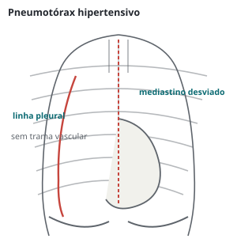

Pneumologia · 73 min · GOLD 2026 · monografia
Doença pulmonar obstrutiva crônica
DPOC segundo o relatório GOLD 2026: o que mudou, diagnóstico e espirometria, avaliação pelos cinco eixos e ferramenta ABE com o novo grupo E, tratamento inicial e de seguimento, eosinófilos e corticoide inalatório, roflumilaste, azitromicina e biológicos, tabagismo, vacinas, reabilitação, oxigênio e ventilação domiciliares, exacerbação no ambulatório e no hospital, comorbidades, redução de volume, transplante e cuidados paliativos.
O que mudou no GOLD 2026
O GOLD é uma estratégia global revisada todo ano; a edição de 2026 incorporou publicações até julho de 2025. O que a prova vai cobrar:
- Grupo E com uma exacerbação. Uma única exacerbação moderada ou grave no ano já define o grupo E (antes: duas moderadas ou uma com internação).
- Atividade de doença como alvo: nenhuma exacerbação, nenhuma piora de sintomas, nenhuma perda acelerada de função.
- Algoritmos separados para o paciente virgem de manutenção e para o seguimento.
- Biológicos: dupilumabe (com bronquite crônica) e mepolizumabe para quem exacerba em tripla com eosinófilos ≥ 300/µL; ensifentrina na via da dispneia.
- Exacerbação reescrita: gravidade pela proposta de Roma, figuras novas de imitadores, local de tratamento e alto fluxo; antibiótico por 5 dias.
- Vacinas de influenza e vírus sincicial respiratório atualizadas; busca ativa de casos com algoritmo próprio; multimorbidade pelos "4Ms"; capítulo novo de tecnologias emergentes.
Definição, causas e fisiopatologia
DPOC é condição pulmonar heterogênea com sintomas respiratórios crônicos (dispneia, tosse, expectoração, exacerbações) por alterações das vias aéreas (bronquite, bronquiolite) e/ou dos alvéolos (enfisema), que causam obstrução persistente, frequentemente progressiva. Resulta de interação entre genes e ambiente ao longo da vida: tabaco, biomassa, poluição, deficiência de alfa-1-antitripsina, desenvolvimento pulmonar anormal (prematuridade, infecções na infância), sequela de tuberculose e asma de longa data. Quem não atinge o pico normal de função no início da vida adulta chega à obstrução mesmo com declínio normal.
Dois estados precursores entram na prova. Pré-DPOC: sintomas e/ou alterações estruturais ou funcionais (enfisema, aprisionamento, difusão baixa, queda rápida do VEF₁) sem obstrução. PRISm: VEF₁/CVF pós-broncodilatador ≥ 0,70 com VEF₁ < 80% do previsto; de 20% a 30% evoluem para obstrução, com mais sintomas, doença cardiopulmonar e mortalidade. Não há tratamento validado além de parar de fumar.
A limitação ao fluxo expiratório gera aprisionamento aéreo; no esforço, o tempo expiratório encurta e o volume pulmonar sobe a cada ciclo (hiperinsuflação dinâmica), que explica a dispneia melhor que o VEF₁. Por isso o broncodilatador de longa duração alivia com ganho pequeno de VEF₁: desinsufla. A hipoxemia crônica leva a vasoconstrição hipóxica, hipertensão pulmonar e policitemia, o perfil em que o oxigênio domiciliar muda a sobrevida.
Diagnóstico e espirometria
Dispneia progressiva, tosse crônica, sibilância ou infecções de repetição em quem tem fator de risco levantam a suspeita; o diagnóstico exige espirometria: VEF₁/CVF pós-broncodilatador < 0,70 no contexto clínico adequado. Pico de fluxo não serve (especificidade fraca).
- Pré-broncodilatador como triagem: sem obstrução no pré, o pós é dispensável, salvo suspeita muito alta. Obstrução no pré se confirma no pós; quem tem obstrução só no pré deve ser seguido.
- Relação entre 0,60 e 0,80: repetir em outra ocasião (variação biológica). Abaixo de 0,60 raramente sobe acima de 0,70.
- Resposta ao broncodilatador não separa asma de DPOC nem prediz resposta ao tratamento: não guia terapia. Não é preciso suspender o inalador para a espirometria anual de seguimento.
- Relação fixa contra limite inferior da normalidade (LIN): o 0,70 superdiagnostica no idoso e subdiagnostica cerca de 1% dos jovens. O GOLD mantém o 0,70 (é o critério dos ensaios); abaixo dos 50 anos com relação repetidamente ≥ 0,70 e suspeita clínica, comparar com o LIN ou escore z. Referência recomendada: equações GLI-Global.
| Grau | VEF₁ pós-broncodilatador (% do previsto) |
|---|---|
| GOLD 1 leve | ≥ 80 |
| GOLD 2 moderada | 50 a 79 |
| GOLD 3 grave | 30 a 49 |
| GOLD 4 muito grave | < 30 |
O grau descreve a obstrução, não a doença: correlaciona mal com sintomas e não escolhe o tratamento inicial, mas pesa no prognóstico e nas indicações de roflumilaste, redução de volume e transplante. Até 70% dos adultos com DPOC não têm diagnóstico; o GOLD não recomenda rastrear assintomáticos e defende a busca ativa de casos (espirometria em quem tem sintomas ou mais de 20 maços-ano, infecções de repetição, eventos precoces na vida), apoiado no ensaio UCAP, e a busca oportunística no rastreamento tomográfico de câncer de pulmão.
O diferencial principal é asma (início precoce, variabilidade, atopia; se coexistem, segue-se a diretriz de asma), insuficiência cardíaca, bronquiectasias (presentes em cerca de 30% das tomografias de DPOC), sequela de tuberculose e bronquiolite obliterante. A radiografia exclui alternativas; a tomografia quantifica enfisema e é obrigatória antes de redução de volume. SpO₂ ≤ 92% indica gasometria. A caminhada de 6 minutos revela limitação escondida e compõe o BODE (IMC, obstrução, dispneia, exercício), melhor preditor de sobrevida que cada componente.
Avaliação inicial em cinco eixos
Confirmado o diagnóstico, avaliam-se gravidade da obstrução, sintomas, exacerbações moderadas e graves, eosinófilos e multimorbidade. Sintomas se medem pelo mMRC (dispneia, corte 2) ou pelo CAAT (o antigo CAT, renomeado; 8 itens, 0 a 40, corte 10, preferido por ser multidimensional).
| mMRC | Falta de ar |
|---|---|
| 0 | Só com exercício intenso |
| 1 | Ao apressar o passo no plano ou subir ladeira leve |
| 2 | Anda mais devagar que os da mesma idade, ou para para respirar no próprio ritmo |
| 3 | Para depois de uns 100 metros ou poucos minutos no plano |
| 4 | Não sai de casa, ou tem falta de ar ao se vestir |
O melhor preditor de exacerbação é ter exacerbado, e mesmo uma exacerbação tratada com corticoide ou antibiótico piora a história natural e aumenta o risco cardiovascular por semanas a um ano. Os eosinófilos não predizem exacerbação no indivíduo, mas predizem o efeito do corticoide inalatório. Hipertensão, coronariopatia, insuficiência cardíaca e arritmia devem ser investigadas em todos.
Ferramenta ABE e o novo grupo E
A classificação ABE cruza sintomas e exacerbações e serve só para o tratamento inicial de quem nunca fez manutenção. O VEF₁ não entra.
Grupo e tratamento?
Grupo A: o VEF₁ de 42% (GOLD 3) não muda o grupo. Um broncodilatador, de preferência de longa duração. A obstrução grave pesa no prognóstico, na reabilitação e no seguimento.Tratamento farmacológico inicial
Não há ensaio de estratégia inicial em recém-diagnosticados; o algoritmo junta dados de pacientes tratados e opinião do comitê.
- Grupo A: um broncodilatador, preferindo o de longa duração, salvo dispneia muito ocasional; manter se houver benefício.
- Grupo B: LABA + LAMA, superior ao LAMA isolado em ensaio com CAAT ≥ 10. Investigar comorbidades que somam dispneia.
- Grupo E: LABA + LAMA; considerar tripla (com corticoide inalatório) se eosinófilos ≥ 300/µL.
- LABA + corticoide não é incentivado: havendo indicação de corticoide, a tripla é superior. Com asma concomitante, tratar como asma (corticoide obrigatório).
- Todos recebem broncodilatador de resgate. Inalador único melhora adesão.
| Afirmação do GOLD (figura A3.2) | Evidência |
|---|---|
| LABA e LAMA são preferidos aos de curta duração, exceto na dispneia muito ocasional | Evidência A |
| LAMA reduz exacerbações mais que LABA | Evidência A |
| Ao iniciar longa duração, preferir LABA + LAMA; dispneia persistente em monoterapia escala para dois | Evidência A |
| LABA + LAMA reduz exacerbações em comparação com monoterapia | Evidência B |
flowchart TD A["DPOC confirmada
sem manutenção prévia"] --> B{"Exacerbação moderada
ou grave no último ano?"} B -->|"uma ou mais"| E["Grupo E
LABA + LAMA"] E --> F{"Eosinófilos
≥ 300/µL?"} F -->|"sim"| G["Considerar tripla
LABA + LAMA + CI"] F -->|"não"| H["Manter
LABA + LAMA"] B -->|"nenhuma"| C{"mMRC ≥ 2
ou CAAT ≥ 10?"} C -->|"sim"| D["Grupo B
LABA + LAMA"] C -->|"não"| I["Grupo A
um broncodilatador"]
Seguimento: revisar, avaliar, ajustar
A cada retorno: revisar dispneia e exacerbações (com eosinófilos); avaliar técnica, adesão e medidas não farmacológicas; ajustar. O algoritmo vale para qualquer paciente em manutenção, qualquer que tenha sido o grupo inicial. Se dispneia e exacerbação coexistem, segue-se a via das exacerbações.
flowchart TD A["Em LABA ou LAMA
e exacerbou"] --> B{"Eosinófilos
no sangue"} B -->|"< 300/µL"| C["LABA + LAMA"] B -->|"≥ 300/µL"| D["LABA + LAMA + CI"] C --> E{"Nova exacerbação.
Eosinófilos?"} E -->|"≥ 100"| D E -->|"< 100"| F["Azitromicina
ou roflumilaste"] D --> G{"Nova exacerbação"} G -->|"2 moderadas ou 1 grave
e eos ≥ 300"| H["Biológico
dupilumabe se bronquite
crônica, mepolizumabe"] G -->|"demais"| F
Não retirar o corticoide da tripla, salvo se iniciado sem indicação, sem resposta, ou com efeito adverso relevante ou pneumonia grave ou recorrente; com eosinófilos ≥ 300/µL a retirada traz novas exacerbações. Quem está bem em LABA + corticoide pode continuar; se exacerba, tripla (eosinófilos ≥ 100/µL) ou LABA + LAMA (< 100/µL).
Eosinófilos e corticoide inalatório
Eosinófilo alto no sangue acompanha inflamação tipo 2 na via aérea, e a resposta ao corticoide inalatório é contínua: pouco ou nenhum efeito abaixo de 100/µL, máximo a partir de 300/µL. O efeito é maior em quem exacerba muito, por isso o eosinófilo decide sempre junto da história. Contagem baixa associa-se a Haemophilus e mais pneumonia.
| Acrescentar corticoide inalatório | Fatores (figura 3.10) |
|---|---|
| Favorece fortemente | Internação por exacerbação; ≥ 2 exacerbações moderadas/ano; eosinófilos ≥ 300/µL; asma atual ou prévia |
| Favorece | 1 exacerbação moderada/ano; eosinófilos de 100 a < 300/µL |
| Contra | Pneumonias de repetição; eosinófilos < 100/µL; infecção micobacteriana prévia |
O corticoide inalatório nunca é usado isolado na DPOC. Aumenta o risco de pneumonia, sobretudo na doença grave (Evidência A), além de candidíase, rouquidão e equimoses; o risco de pneumonia é maior em fumantes, idade ≥ 55 anos, pneumonia ou exacerbação prévia, IMC < 25 e obstrução grave. Em compensação, a tripla em inalador único reduziu mortalidade contra LABA + LAMA (IMPACT, ETHOS) em quem exacerba. Corticoide oral de manutenção não tem papel (efeitos adversos, Evidência A).
E o corticoide?
Retirar é razoável (pneumonia recorrente, eosinófilos < 100/µL), mantendo LABA + LAMA e seguimento próximo. Com eosinófilos ≥ 300/µL a retirada favoreceria novas exacerbações.Roflumilaste, azitromicina e biológicos
- Azitromicina 250 mg/dia ou 500 mg três vezes por semana, por um ano (Evidência A). Menos benefício em fumantes ativos. Riscos: resistência, QTc longo, perda auditiva. Sem dados além de um ano.
- Roflumilaste (inibidor oral da fosfodiesterase-4; pela bula, 250 µg/dia nas 4 primeiras semanas e depois 500 µg/dia) para VEF₁ < 50%, bronquite crônica e exacerbação prévia (Evidência A). Diarreia, náusea, perda de peso (em média 2 kg), insônia; evitar no baixo peso, cautela na depressão.
- Dupilumabe 300 mg SC a cada 2 semanas (anti-IL-4/IL-13): eosinófilos ≥ 300/µL com bronquite crônica.
- Mepolizumabe 100 mg SC a cada 4 semanas (anti-IL-5): eosinófilos ≥ 300/µL, com ou sem bronquite crônica.
| Ensaio (todos em tripla) | Critério | Exacerbações | VEF₁ e SGRQ |
|---|---|---|---|
| BOREAS, dupilumabe | Bronquite crônica, eos ≥ 300 | RR 0,70 | +83 mL; −3,4 |
| NOTUS, dupilumabe | Idem | RR 0,66 | +62 mL; −3,4 |
| MATINEE, mepolizumabe | Eos ≥ 300 | RR 0,79 | Sem ganho |
Na figura de seguimento, o biológico entra com duas exacerbações moderadas ou uma grave em tripla e eosinófilos ≥ 300/µL (Evidência A para os dois). A ensifentrina (inibidor inalatório de fosfodiesterase 3 e 4, nebulizado) melhora VEF₁ e dispneia, não foi testada sobre dupla ou tripla nem em exacerbadores, e só existe nos Estados Unidos. Mucolíticos reduzem exacerbações em selecionados (Evidência B). Estatina não previne exacerbação (Evidência A).
Tabagismo e vacinas
Parar de fumar reduziu mortalidade em ensaio randomizado (Lung Health Study, seguimento de 14,5 anos). Mesmo 3 minutos de aconselhamento ajudam; em DPOC, a abstinência em um ano foi de 1,4% com cuidado usual e 12,3% com aconselhamento intensivo mais farmacoterapia. Primeira linha: vareniclina, bupropiona, nortriptilina e reposição de nicotina (pode começar mais de duas semanas após evento cardiovascular agudo). Cigarro eletrônico não tem evidência de eficácia e segurança para cessação.
| Vacina | GOLD 2026 (seguir o calendário local) |
|---|---|
| Influenza | Anual; reduz internação, AVC e morte. No idoso, alta dose e adjuvantada são opções |
| Pneumocócica | ≥ 50 anos, ou 19 a 49 com doença pulmonar crônica; o GOLD recomenda PCV20 ou PCV21 na DPOC (alternativa: PCV13 ou PCV15 seguida de PPSV23) |
| Vírus sincicial respiratório | Universal ≥ 75 anos; de 50 a 74 com fator de risco, como doença pulmonar crônica |
| dTpa, herpes-zóster, covid-19 | dTpa se não vacinado na adolescência; zóster de rotina; covid-19 conforme a recomendação nacional |
Reabilitação pulmonar
Exercício supervisionado, educação e automanejo tratam o que o broncodilatador não alcança: disfunção muscular, descondicionamento e medo da dispneia. Indicada a todos com sintomas relevantes e/ou alto risco de exacerbação, qualquer que seja o VEF₁ (Evidência A); melhora dispneia, estado de saúde e tolerância ao exercício (A), ansiedade e depressão (A). Programas de 6 a 8 semanas (12 não acrescentam), exercício supervisionado pelo menos duas vezes por semana. Após exacerbação, iniciar na internação ou até 4 semanas da alta reduz internação (Evidência B); numa coorte de 190 mil internados, iniciar até 90 dias após a alta associou-se a menor mortalidade, e quase ninguém recebeu. Telerreabilitação é alternativa quando não há centro.
Oxigênio e ventilação domiciliares
| Oxigênio domiciliar prolongado (estável, acordado, em repouso) |
|---|
| PaO₂ ≤ 55 mmHg ou SaO₂ ≤ 88%, com ou sem hipercapnia, confirmada duas vezes em três semanas |
| PaO₂ de 55 a 60 mmHg ou SaO₂ de 88% com hipertensão pulmonar, edema sugestivo de insuficiência cardíaca ou policitemia (hematócrito > 55%) |
Aumenta a sobrevida na hipoxemia grave de repouso (Evidência A); na dessaturação moderada, de repouso ou ao exercício, não aumenta sobrevida nem reduz internação (Evidência A). Uso por mais de 15 horas por dia: o ensaio REDOX não mostrou vantagem de 24 sobre 15 horas. Titular para SaO₂ ≥ 90% e reavaliar em 60 a 90 dias em ar ambiente e no fluxo prescrito. Em voo, manter PaO₂ ≥ 50 mmHg; saturação boa no solo não exclui hipoxemia grave no avião (Evidência C).
Ventilação não invasiva domiciliar
Indicada na hipercapnia diurna persistente, sobretudo após internação. No HOT-HMV (PaCO₂ > 53 mmHg de 2 a 4 semanas após a acidose), acrescentar VNI ao oxigênio levou a mediana até readmissão ou morte de 1,4 para 4,3 meses (HR 0,49), com pressões altas (IPAP mediana de 24 cmH₂O). Na sobreposição com apneia obstrutiva, CPAP melhora sobrevida e reduz internação.
| Recomendação | Força |
|---|---|
| VNI noturna na DPOC estável com hipercapnia crônica (ATS 2020) | condicionalcerteza moderada |
| Rastrear apneia do sono antes de iniciar (ATS 2020) | condicionalcerteza muito baixa |
| Não iniciar VNI crônica na internação por hipercapnia aguda sobre crônica; reavaliar 2 a 4 semanas após (ATS 2020) | condicional contracerteza baixa |
| Ajustar para normalizar a PaCO₂ (ATS 2020) | condicionalcerteza baixa |
| VNI pode melhorar a sobrevida livre de internação após internação recente com PaCO₂ > 53 mmHg (GOLD) | Evidência B |
O que reduz mortalidade
| Intervenção (figura 3.19) | Efeito | Em quem |
|---|---|---|
| Tripla em inalador único contra LABA + LAMA | IMPACT HR 0,72; ETHOS HR 0,51 | Exacerbações frequentes e/ou graves |
| Cessação do tabagismo | HR 1,18 para o cuidado usual | Pouco sintomáticos |
| Reabilitação | RR 0,28 nos ensaios antigos; inconclusivo nos novos | Internados, até 4 semanas da alta |
| Oxigênio domiciliar | Cerca de 50% (NOTT, MRC) | Hipoxemia grave |
| VNI domiciliar | 12% contra 33% (HR 0,24) | Hipercapnia acentuada, IPAP alta |
| Cirurgia redutora de volume | RR 0,47 | Enfisema de lobos superiores, baixa capacidade de exercício |
LABA + corticoide (TORCH, SUMMIT) e LAMA (UPLIFT) não reduziram mortalidade.
Exacerbação: gravidade e local de tratamento
Exacerbação é piora aguda (até 14 dias) de dispneia, tosse e/ou escarro, desencadeada sobretudo por vírus (rinovírus, influenza, VSR, metapneumovírus), bactérias e poluição. Os sintomas duram 7 a 10 dias, a recuperação leva até 4 a 6 semanas e, após internação, a mortalidade em cinco anos é de cerca de 50%. Em 2026 a gravidade deixou de ser definida pelo tratamento recebido e passou à proposta de Roma, medida no atendimento:
| Gravidade | Critérios |
|---|---|
| Leve (padrão) | Dispneia < 5 na escala visual de 0 a 10; FR < 24; FC < 95; SaO₂ ≥ 92% em ar ambiente (ou no O₂ habitual) e queda ≤ 3%; PCR < 10 mg/L |
| Moderada (≥ 3 de 5) | Dispneia ≥ 5; FR ≥ 24; FC ≥ 95; SaO₂ < 92% e/ou queda > 3%; PCR ≥ 10 mg/L |
| Grave | Como a moderada, com gasometria mostrando PaO₂ ≤ 60 mmHg e/ou PaCO₂ > 45 mmHg com pH < 7,35 |
Aplicada a internados, a classificação mostra que 15% a 30% têm evento leve, e a gravidade de Roma acompanha necessidade de UTI e mortalidade. No hospital, o GOLD acrescenta sinais de falência ventilatória: alteração aguda do sensório, hipoxemia que exige FiO₂ > 40% e acidose com pH ≤ 7,25.
Antes de rotular, procurar o que imita ou agrava a exacerbação (figura nova de 2026): insuficiência cardíaca (NT-proBNP, eco), infarto e fibrilação ou flutter (ECG, troponina), embolia pulmonar (até 5,9% dos internados), pneumonia e, menos frequente, pneumotórax. O GOLD sugere dosar troponina e peptídeo natriurético, com evidência fraca.

Mais de 80% das exacerbações são tratadas no ambulatório. Internar se há sinais de insuficiência respiratória, falha do tratamento inicial, comorbidade grave ou suporte domiciliar insuficiente; UTI se hipoxemia ou hipercapnia progride apesar do suporte, piora do sensório, necessidade de intubação ou instabilidade hemodinâmica.
flowchart TD A["Suspeita de exacerbação"] --> B["Excluir imitadores
pneumonia, IC, embolia
arritmia, pneumotórax"] B --> C{"Gravidade de Roma"} C -->|"leve"| D["Ambulatório
SABA ± SAMA"] C -->|"moderada"| E["Ambulatório ou PS
+ prednisona 40 mg 5 dias
antibiótico se indicado"] C -->|"grave"| F["Hospital
O2 controlado
gasometria seriada"] E --> G{"Critério de
internação?"} G -->|"sim"| F G -->|"não"| H["Alta com plano
e retorno precoce"] F --> I{"Acidose, sensório
ou instabilidade?"} I -->|"sim"| J["VNI em unidade
monitorizada ou UTI"] I -->|"não"| K["Enfermaria"]
Exacerbação: broncodilatador, corticoide e antibiótico
- Broncodilatador: β2-agonista de curta duração ± antimuscarínico de curta duração; nebulização ou 1 a 2 jatos a cada hora por 2 a 3 doses, depois a cada 2 a 4 horas. Nebulizar com ar, não com oxigênio (risco de elevar a PaCO₂). Reiniciar o de longa duração antes da alta.
- Corticoide: prednisona 40 mg/dia por 5 dias; via oral equivale à venosa.
- Antibiótico, quando indicado: 5 dias; aminopenicilina com clavulanato, macrolídeo ou tetraciclina, quinolona em selecionados, conforme resistência local.
- Não usar metilxantina venosa nem estimulante respiratório. Fazer profilaxia de tromboembolismo no internado.
No REDUCE, 5 dias de prednisona 40 mg foram não inferiores a 14 dias quanto a nova exacerbação em seis meses (37,2% contra 38,4%), com metade da dose cumulativa. Cursos longos e mesmo cursos curtos repetidos aumentam pneumonia, sepse e morte. A resposta cresce com os eosinófilos; na atenção primária (STARR2), o corticoide pôde ser omitido em parte dos pacientes com contagem baixa, ainda sem validação no internado.
Corticoide e antibiótico?
É exacerbação leve pela proposta de Roma (nenhum parâmetro de moderada) e provavelmente viral. Broncodilatador de curta duração em dose otimizada, sem antibiótico (não há purulência nem ventilação) e, em geral, sem corticoide, reservado às exacerbações significativas. Retorno precoce e orientação de piora.| Figura 4.6 do GOLD | Evidência |
|---|---|
| Broncodilatador de curta duração como tratamento inicial | Evidência C |
| Corticoide sistêmico por 5 dias | Evidência A |
| Antibiótico com escarro purulento, cultura prévia positiva ou ventilação mecânica | Evidência A |
| Antibiótico por 5 dias | Evidência B |
| VNI reduz intubação e internação e melhora sobrevida | Evidência A |
Oxigênio, alto fluxo e ventilação na exacerbação
Oxigênio em excesso eleva a PaCO₂ por três mecanismos: desfaz a vasoconstrição hipóxica e piora a relação ventilação-perfusão, desloca CO₂ da hemoglobina (efeito Haldane) e, em menor grau, reduz o estímulo ventilatório. A British Thoracic Society recomenda SpO₂ de 88% a 92% para quem tem DPOC ou risco de hipercapnia, até a gasometria. No ensaio pré-hospitalar que sustenta o alvo, oxigênio titulado reduziu a mortalidade em 78% nos com DPOC confirmada (2% contra 9%), com menos acidose. Venturi facilita a titulação.
| Indicações de VNI (figura 4.8): pelo menos uma |
|---|
| Acidose respiratória: PaCO₂ ≥ 45 mmHg e pH ≤ 7,35 |
| Dispneia grave com fadiga ou trabalho respiratório aumentado (musculatura acessória, respiração paradoxal, tiragem) |
| Hipoxemia persistente apesar do oxigênio |
A VNI é o modo inicial na insuficiência respiratória da exacerbação, com sucesso de 80% a 85%; reduz intubação e mortalidade. Suspende-se sem desmame quando o paciente tolera 4 horas sem suporte. Quem falha e é intubado tarde tem mais mortalidade, por isso a reavaliação clínica e gasométrica nas primeiras horas faz parte do tratamento.
| Recomendação | Força |
|---|---|
| VNI de dois níveis na acidose respiratória (pH ≤ 7,35) por exacerbação (ERS/ATS 2017) | fortecerteza alta |
| Tentar VNI em quem parece precisar de intubação, salvo deterioração imediata (ERS/ATS 2017) | fortecerteza moderada |
| Não usar VNI na hipercapnia sem acidose (ERS/ATS 2017) | condicional contracerteza baixa |
| VNI para facilitar o desmame na insuficiência hipercápnica (ERS/ATS 2017) | condicionalcerteza moderada |
| Tentar VNI antes do alto fluxo na insuficiência hipercápnica da DPOC (ERS 2022) | condicional |
O cateter nasal de alto fluxo é, para o GOLD, o primeiro modo na insuficiência hipoxêmica; na hipercápnica, ou se o alto fluxo falha, a escolha é VNI. Nos ensaios com acidose, cerca de 30% dos alocados ao alto fluxo trocaram para VNI em 6 horas. Intubar se hipoxemia persiste apesar de alto fluxo ou VNI, intolerância a ambos, parada, rebaixamento do sensório ou agitação incontrolável, aspiração, incapacidade de eliminar secreções, instabilidade hemodinâmica refratária ou arritmia grave. Intubado, o risco é a auto-PEEP: sem tempo para expirar, o ar se acumula e derruba o retorno venoso. A ventilação reduz o volume-minuto, encurta a inspiração e aceita hipercapnia com pH tolerável. A mortalidade hospitalar da DPOC ventilada vai de 17% a 49%, menor que a de outras causas; o GOLD critica recusar UTI por pessimismo prognóstico.
O que aconteceu e o que fazer?
Hipercapnia agravada pelo oxigênio em excesso (vasoconstrição hipóxica desfeita, efeito Haldane). Reduzir a FiO₂ para SpO₂ de 88% a 92% sem retirar o oxigênio de vez (a hipoxemia de rebote é perigosa) e iniciar VNI de dois níveis pela acidose, em unidade monitorizada, com gasometria de controle; sonolência progressiva ou falha da VNI indicam intubação.flowchart TD A["Exacerbação com hipoxemia"] --> B["O2 controlado
alvo SpO2 88 a 92%
gasometria"] B --> C{"PaCO2 ≥ 45
e pH ≤ 7,35?"} C -->|"sim"| D["VNI de dois níveis
em unidade monitorizada"] C -->|"não"| E{"Hipoxemia persiste
ou trabalho respiratório?"} E -->|"hipoxemia"| F["Cateter nasal
de alto fluxo"] E -->|"fadiga"| D E -->|"não"| G["Manter O2 titulado
tratar a causa"] D --> H{"Melhora nas
primeiras horas?
pH, PaCO2, FR"} F --> H H -->|"sim"| I["Manter e reavaliar"] H -->|"não"| J["Intubação
ventilar dando
tempo para expirar"]
Alta hospitalar e prevenção da próxima crise
De 30% a 50% são readmitidos em 30 dias. Na alta (figura 4.10): revisar dados clínicos, ajustar a manutenção (com eosinófilos elevados, sair em tripla), conferir a técnica inalatória, explicar a suspensão do corticoide e do antibiótico, avaliar a necessidade de oxigênio, entregar plano de ação e agendar retorno em 1 a 4 semanas (enfrentamento em casa, tratamento, técnica, oxigênio, elegibilidade para reabilitação, CAAT ou mMRC, comorbidades) e em 12 a 16 semanas (acrescenta espirometria). Iniciar a tripla nos primeiros 30 dias após a primeira exacerbação reduziu em 20% a 30% as novas exacerbações em estudos observacionais; num grande estudo de mundo real, só 17,5% saíram em tripla e mais de um quarto saiu só com resgate ou sem inalador. Exacerbação recorrente pede tomografia (bronquiectasias, enfisema).
Comorbidades
O GOLD propõe a abordagem dos "4Ms" (mentação, mobilidade, medicações, morbidades) e lembra que a comorbidade é tratada como seria sem DPOC.
- Cardiovascular: a principal causa de morte na DPOC leve a moderada. Insuficiência cardíaca em 20% a 30%; β-bloqueador cardiosseletivo não deve ser negado quando há indicação cardiovascular, mas não serve para prevenir exacerbação. Fibrilação atrial se trata pelas diretrizes usuais; SABA e teofilina podem precipitá-la. O risco de infarto e AVC sobe após exacerbação e persiste até 1 a 2 anos.
- Hipertensão pulmonar: pressão média > 20 mmHg em 25% a 30%; grave (resistência > 5 unidades Wood) em cerca de 5%, com DLCO < 45% e obstrução só leve a moderada (fenótipo vascular). Eco é o melhor exame não invasivo; vasodilatador específico não é recomendado na forma não grave.
- Câncer de pulmão: tomografia de baixa dose anual para fumantes elegíveis (50 a 80 anos, 20 maços-ano, fumando ou parado há menos de 15 anos); não se rastreia DPOC de não fumante.
- Apneia obstrutiva do sono: na sobreposição, CPAP reduz morte e internação.
- IMC < 21 associa-se a mortalidade; obesidade, a síndrome metabólica e apneia. Osteoporose, sarcopenia e anemia formam o fenótipo de perda de tecido em vários órgãos; cursos repetidos de corticoide sistêmico agravam a osteoporose.
- Ansiedade e depressão, subdiagnosticadas: reabilitação e terapia cognitivo-comportamental ajudam; antidepressivos têm resultados inconclusivos.

Redução de volume e transplante
No enfisema com hiperinsuflação acentuada refratária ao tratamento clínico, a redução de volume diminui o volume pulmonar, recupera recolhimento elástico e melhora mecânica respiratória e cardíaca. A cirurgia redutora (NETT) aumentou sobrevida no enfisema de lobos superiores com baixa capacidade de exercício após reabilitação e aumentou mortalidade com VEF₁ ≤ 20% associado a enfisema homogêneo ou DLCO ≤ 20%. As válvulas endobrônquicas servem a candidatos com VEF₁ de 15% a 45% e hiperinsuflação acentuada, e dependem de cisura íntegra (sem ventilação colateral). Bulectomia se a bolha ocupa mais de um terço do hemitórax. Transplante: encaminhar com doença progressiva apesar do tratamento, não candidato a redução de volume, BODE 5 a 6, PaCO₂ > 50 e/ou PaO₂ < 60 mmHg e VEF₁ < 25%; listar com BODE ≥ 7, VEF₁ < 15% a 20%, três ou mais exacerbações graves no ano, uma com insuficiência hipercápnica, ou hipertensão pulmonar moderada a grave. A sobrevida mediana é de 5,9 anos.
Cuidados paliativos
A DPOC avançada é muito sintomática e recebe menos cuidado paliativo que o câncer de pulmão. A dispneia refratária responde a opioide, ventilador dirigido ao rosto, eletroestimulação e vibração torácica, além de reabilitação e broncodilatação otimizada. Os dados com opioide são mistos: morfina de liberação imediata prolongou a tolerância ao exercício em mais da metade dos pacientes num estudo, e morfina de liberação prolongada (8 ou 16 mg/dia por uma semana) não melhorou a dispneia em mMRC 3 a 4 noutro. Benzodiazepínicos não têm benefício demonstrado. Suplemento nutricional ajuda o desnutrido. Como a previsão de sobrevida em seis meses é pouco confiável, o planejamento antecipado de cuidados (reanimação, intubação, local de morte) deve começar cedo, e a internação é bom momento para abri-lo.
Erros frequentes
- Diagnosticar sem espirometria, ou usar a resposta ao broncodilatador para decidir tratamento.
- Escolher o grupo pelo VEF₁. ABE usa sintomas e exacerbações; e, em 2026, uma exacerbação moderada já é grupo E.
- LABA + corticoide inalatório, ou corticoide isolado. Havendo indicação de corticoide, tripla.
- Escalar sem conferir técnica e adesão.
- Manter corticoide com eosinófilos < 100/µL e pneumonias de repetição; retirar com eosinófilos ≥ 300/µL.
- Oxigênio domiciliar na dessaturação moderada ou sem reavaliar em 60 a 90 dias.
- Prednisona por 10 a 14 dias; o padrão é 40 mg por 5 dias.
- Antibiótico sem purulência (fora da ventilação mecânica), por 7 a 10 dias, ou guiado por procalcitonina.
- Nebulizar com oxigênio ou buscar saturação acima de 92% no retentor.
- VNI como último recurso na acidose, ou VNI na hipercapnia sem acidose.
- Iniciar VNI crônica na alta sem reavaliar a PaCO₂ em 2 a 4 semanas.
- Não dosar alfa-1-antitripsina, ou não procurar embolia, insuficiência cardíaca e pneumotórax na exacerbação.
- Negar β-bloqueador cardiosseletivo com indicação cardiovascular.